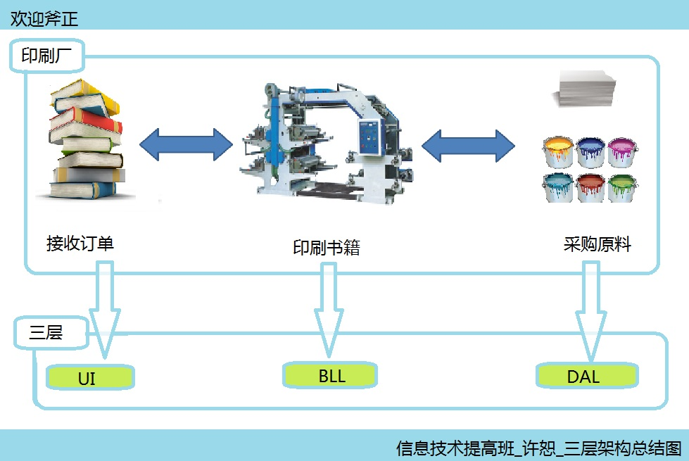
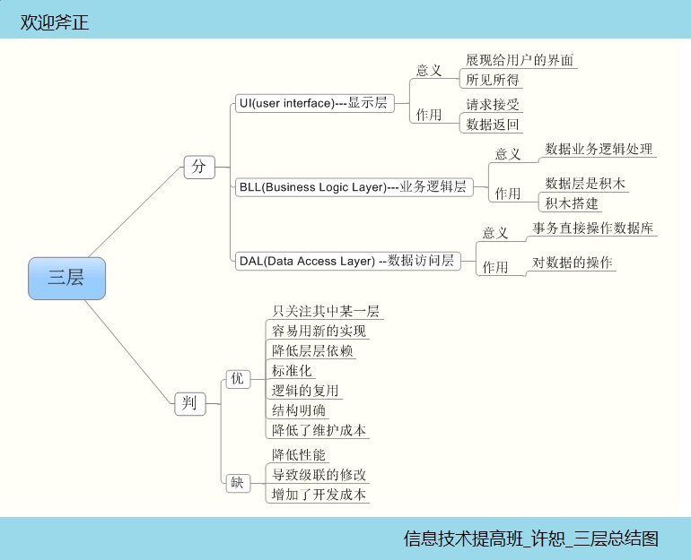

当新接触一个新的事物，我们一般会提出这样几个问题，它是什么？它做什么？它怎么做？为什么是它？和我有什么关系？今天咱们就三层这个较新的概念，展开着几个问题的研究。
它是什么？
这是个很哲学的问题，也是很概括性的问题，首先把这个问题我们来看看官方的定义，很简单就是“一种结构”按照通俗的理解就是一种解决问题的方式方法！三层的目的就是让一个复杂的问题归纳，细化为三个基本的问题。
它做什么？
三层做的事情也很简单，叫“解耦”，让复杂的关系从千丝万缕的联系中解脱出来，分成三个最基本的问题，这三个问题是，怎么表现？什么逻辑？如何处理？分别对应咱们熟悉的三个英文单词：
UI(user interface)---显示层
BLL(Business Logic Layer)---业务逻辑层
DAL(Data Access Layer) --数据访问层
它怎么做？
很神奇的事情，它是怎么做到的呢？虽然我还没有实际演练过，不过可以这么说，好的程序必然经过绝佳的需求分析与精心的设计，三层也不会例外，需求分析是软工的至关重要的一步，也是我们这类工作人员异常关心的一步，准确地需求分析能够帮助我们减少成本，顺利开发。
设计也不能马虎，每一层的类的设计，关系的设计等等决定我们软件的质量，所以三层就来源于需求分析与设计！
为什么是它？
为什么是三层不是两层或者多层，是的我们很容易理解为什么不是两层，因为耦合性太强，这是面向对象开发的大忌，但是，为什么不是更多层呢，这里就需要我们考虑另外一个问题，就是粒度！耦合性太不强也不好，聚合性太强不见得好，我们需要经验总结去平衡两者的关系，大家普遍接受了三层！
我们不是说摒弃了双层与多层，是我们要在合适的时机再考虑合适的分层！
和我有什么关系？
这个问题就是老师常说的结网，它和我以前学的什么有关系呢，答案是必然有关系，首先从面向对象说起，三层就是进行类的分类和设计，在软工里就是进行概要设计详细设计里的内容！
在现实生活中，我们这样分层的例子比比皆是，比如说印刷厂：

通过一系列的问题，我们可以初步地认识三层，以后用具体的实践来充实自己的想法！
